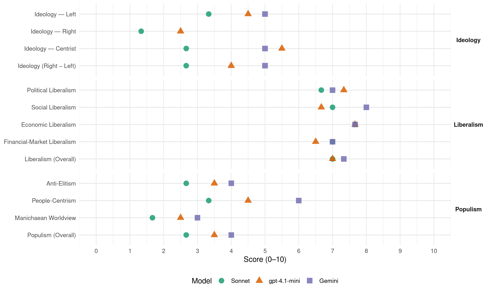

A (Peru, 2016)
manifesto_id 179042_201604
Get full text: This site shows derived annotations and short verbatim quotes only. The full manifesto text is © Manifesto Project / WZB — obtain it via manifesto-project.wzb.eu using the manifesto_id above.
Headline scores
| Dimension | Sonnet | gpt-4.1-mini | Gemini |
|---|---|---|---|
| Populism (Overall) | 2.7 | 3.5 | 4.0 |
| Anti-Elitism | 2.7 | 3.5 | 4.0 |
| People-Centrism | 3.3 | 4.5 | 6.0 |
| Manichaean Worldview | 1.7 | 2.5 | 3.0 |
| Ideology (Right − Left) | 2.7 | 4.0 | 5.0 |
| Liberalism (Overall) | 7.0 | 7.0 | 7.3 |
| Political Liberalism | 6.7 | 7.3 | 7.0 |
| Social Liberalism | 7.0 | 6.7 | 8.0 |
| Economic Liberalism | 7.7 | 7.7 | 7.7 |
| Financial-Market Liberalism | 7.0 | 6.5 | 7.0 |
Evidence per dimension
Economic Liberalism
Gemini · score 7.0 · verified · chunk 1
“promoción de la competencia entre empresas privadas”
Promoción de la competencia entre empresas privadas y la desconcentración empresarial, evitando los monopolios
Gemini · score 8.0 · verified · chunk 2
“defensa de la libre competencia”
El INDECOPI ha venido desempeñando una buena labor en la defensa de la libre competencia. Sin embargo, se requiere fortalecer sus capacidades legales
Gemini · score 8.0 · verified · chunk 3
“La promoción de la inversión privada”
antes que la exportación. 5. La promoción de la inversión privada se ha burocratizado y anquilosado
gpt-4.1-mini · score 7.0 · verified · chunk 1
“Promoción de la competencia entre empresas privadas y la desconcentración empresarial, evitando los monopolios”
Promoción de la competencia entre empresas privadas y la desconcentración empresarial, evitando los monopolios y castigando severamente la violación de las reglas de la libre competencia. Fuerte impulso al desarrollo de una oferta competitiva orientada a la exportación…
gpt-4.1-mini · score 8.0 · verified · chunk 2
“defensa de la libre competencia”
…El INDECOPI ha venido desempeñando una buena labor en la defensa de la libre competencia. Sin embargo, se requiere fortalecer sus capacidades legales y operativas, buscando una mayor cercanía con la población y las empresas, dando ejemplo de simplificación en sus trámites.
gpt-4.1-mini · score 8.0 · verified · chunk 3
“mercado, competencia, empresa, impuestos, comercio, regulación, privatización”
…se promueve el mercado, competencia, empresa, impuestos, comercio, regulación y privatización…
Sonnet · score 7.0 · verified · chunk 1
“Promoción de la competencia entre empresas”
Promoción de la competencia entre empresas privadas y la desconcentración empresarial, evitando los monopolios y castigando severamente la violación de las reglas de la libre competencia
Sonnet · score 8.0 · verified · chunk 2
“política de la más amplia libertad de precios”
En general, regirá una política de la más amplia libertad de precios, pero a la vez de severa sanción las conductas violadoras de la libre competencia
Sonnet · score 8.0 · verified · chunk 3
“incentivos tributarios por plazo definido y facilidades”
A través de estos contratos se otorgará incentivos tributarios por plazo definido y facilidades de instalación en parques tecnológicos, parques industriales o zonas económicas especiales
Financial-Market Liberalism
Gemini · score 6.0 · verified · chunk 1
“promoveremos una mayor incursión de la banca”
Promoveremos una mayor incursión de la banca extranjera y la incursión de inversionistas, fondos de inversión
Gemini · score 8.0 · verified · chunk 2
“incursión de la banca extranjera”
de la gestión de riesgos crediticios, etc. Promoveremos una mayor incursión de la banca extranjera y la incursión de inversionistas, fondos de inversión
Gemini · score 7.0 · verified · chunk 3
“bajo el mecanismo de fideicomiso”
fondos de inversión de alcance macrorregional, bajo el mecanismo de fideicomiso. Reconversión de PROINVERSIÓN
gpt-4.1-mini · score 6.0 · verified · chunk 1
“Promoveremos una mayor incursión de la banca extranjera y la incursión de inversionistas, fondos de inversión”
Promoveremos una mayor incursión de la banca extranjera y la incursión de inversionistas, fondos de inversión y grupos económicos en la creación de nuevas entidades financieras, que añadan competencia en el mercado. Y promoveremos el desarrollo del mercado de fideicomisos, factoring, garantías, fianzas…
gpt-4.1-mini · score 7.0 · verified · chunk 2
“promoveremos una mayor incursión de la banca extranjera y la incursión de inversionistas”
…Promoveremos una mayor incursión de la banca extranjera y la incursión de inversionistas, fondos de inversión y grupos económicos en la creación de nuevas entidades financieras, que añadan competencia en el mercado. Y promoveremos el desarrollo del mercado de fideicomisos, factoring, garantías, fianzas, etc. para mejorar el acceso de las MIPYME a un financiamiento barato.
Sonnet · score 6.0 · mixed · chunk 1
“mayor incursión de la banca extranjera”
Promoveremos una mayor incursión de la banca extranjera y la incursión de inversionistas, fondos de inversión y grupos económicos en la creación de nuevas entidades financieras
Sonnet · score 8.0 · verified · chunk 2
“mayor incursión de la banca extranjera”
Promoveremos una mayor incursión de la banca extranjera y la incursión de inversionistas, fondos de inversión y grupos económicos en la creación de nuevas entidades financieras, que añadan competencia en el mercado.
Sonnet · score 6.0 · verified · chunk 3
“fondos de inversión de alcance macrorregional, bajo el mecanismo de fideicomiso”
con el soporte de fondos de inversión de alcance macrorregional, bajo el mecanismo de fideicomiso.
Political Liberalism
Gemini · score 8.0 · verified · chunk 1
“establece la división de poderes del Estado”
respeto pleno a la Constitución de la República del Perú que promueve una economía social de mercado, establece la división de poderes del Estado dentro del marco
Gemini · score 8.0 · verified · chunk 2
“ejercicio democrático partidario; nueva estructura”
profunda del aparato estatal que comprenda: nuevas reglas de juego para el ejercicio democrático partidario; nueva estructura organizativa del aparato estatal; simplificación, optimización
Gemini · score 5.0 · verified · chunk 3
“coordinando con las OPI en todo el país”
promoción de la inversión privada, coordinando con las OPI en todo el país. Promover la inversión privada
gpt-4.1-mini · score 8.0 · verified · chunk 1
“respeto pleno a la Constitución de la República del Perú que promueve una economía social de mercado”
APP manifiesta su convicción democrática, sustentada en el respeto pleno a la Constitución de la República del Perú que promueve una economía social de mercado, establece la división de poderes del Estado dentro del marco del Estado de derecho, el respeto de los derechos humanos y la protección a las minorías…
gpt-4.1-mini · score 8.0 · verified · chunk 2
“institucionalizar el diálogo, la concertación y consenso democrático”
…Institucionalizar el diálogo, la concertación y consenso democrático, para la erradicación de la violencia y fortalecimiento del civismo. Fortalecer las organizaciones políticas, promoviendo una democracia interna plena y la participación de los sectores debidamente representados.
gpt-4.1-mini · score 6.0 · verified · chunk 3
“democracia, derechos, elecciones, cortes, medios, gobierno, parlamento”
…mencionan democracia, derechos, elecciones, cortes, medios, gobierno, parlamento y otras instituciones políticas…
Sonnet · score 8.0 · verified · chunk 1
“respeto pleno a la Constitución”
APP manifiesta su convicción democrática, sustentada en el respeto pleno a la Constitución de la República del Perú que promueve una economía social de mercado, establece la división de poderes
Sonnet · score 7.0 · verified · chunk 2
“Fortalecer las organizaciones políticas, promoviendo una democracia interna plena”
OBJETIVOS Institucionalizar el diálogo, la concertación y consenso democrático. Fortalecer las organizaciones políticas, promoviendo una democracia interna plena y la participación de los sectores debidamente representados.
Sonnet · score 5.0 · verified · chunk 3
“Cumplir con los compromisos asumidos por el Estado Peruano”
Cumplir con los compromisos asumidos por el Estado Peruano en la COP 21
Liberalism (Overall)
Gemini · score 7.0 · verified · chunk 1
“establece la división de poderes del Estado”
respeto pleno a la Constitución de la República del Perú que promueve una economía social de mercado, establece la división de poderes del Estado dentro del marco
Gemini · score 8.0 · verified · chunk 2
“defensa de la libre competencia”
El INDECOPI ha venido desempeñando una buena labor en la defensa de la libre competencia. Sin embargo, se requiere fortalecer sus capacidades legales
Gemini · score 7.0 · verified · chunk 3
“La promoción de la inversión privada”
antes que la exportación. 5. La promoción de la inversión privada se ha burocratizado y anquilosado
gpt-4.1-mini · score 7.0 · verified · chunk 1
“respeto pleno a la Constitución de la República del Perú que promueve una economía social de mercado”
APP manifiesta su convicción democrática, sustentada en el respeto pleno a la Constitución de la República del Perú que promueve una economía social de mercado, establece la división de poderes del Estado dentro del marco del Estado de derecho, el respeto de los derechos humanos y la protección a las minorías…
gpt-4.1-mini · score 8.0 · verified · chunk 2
“defensa de la libre competencia”
…El INDECOPI ha venido desempeñando una buena labor en la defensa de la libre competencia. Sin embargo, se requiere fortalecer sus capacidades legales y operativas, buscando una mayor cercanía con la población y las empresas, dando ejemplo de simplificación en sus trámites.
gpt-4.1-mini · score 6.0 · verified · chunk 3
“democracia, derechos, mercado, competencia, empresa, impuestos, comercio”
…se promueve democracia, derechos, mercado, competencia, empresa, impuestos y comercio…
Sonnet · score 7.0 · verified · chunk 1
“economía social de mercado”
cumpliendo fielmente los principios de un Estado de derecho democrático, una economía social de mercado y una sociedad plural y solidaria, instituidos en la Constitución Política del Perú
Sonnet · score 8.0 · verified · chunk 2
“política de la más amplia libertad de precios”
En general, regirá una política de la más amplia libertad de precios, pero a la vez de severa sanción las conductas violadoras de la libre competencia
Sonnet · score 6.0 · verified · chunk 3
“incentivos tributarios por plazo definido y facilidades”
A través de estos contratos se otorgará incentivos tributarios por plazo definido y facilidades de instalación en parques tecnológicos, parques industriales o zonas económicas especiales
Anti-Elitism
Gemini · score 4.0 · verified · chunk 1
“vulnerable al mercantilismo y al tráfico de influencias”
De un Estado vulnerable al mercantilismo y al tráfico de influencias a favor de grupos económicos
gpt-4.1-mini · score 4.0 · verified · chunk 1
“la concentración del poder, a la colusión de intereses”
…concentración del poder, a la colusión de intereses (tráfico de influencias, carteles, asociaciones ilícitas para delinquir, etc.) y al abuso de las posiciones de dominio, excluyentes de las grandes mayorías. Si bien la libertad concebida como proyección de la acción individual hacia los demás es antitética a la intervención del Estado…
gpt-4.1-mini · score 3.0 · verified · chunk 2
“El aparato del Estado peruano ha crecido desmesuradamente y sin embargo cada vez se ha vuelto más burocrático, ineficiente, lento, fragmentado y populista”
…reingeniería profunda del aparato estatal que comprenda: nuevas reglas de juego para el ejercicio democrático partidario; nueva estructura organizativa del aparato estatal; simplificación, optimización y automatización de procesos, trámites y mecanismos de coordinación; carrera pública meritocrática; e institucionalización de la participación ciudadana. El aparato del Estado peruano ha crecido desmesuradamente y sin embargo cada vez se ha vuelto más burocrático, ineficiente, lento, fragmentado y populista, habiendo perdido su capacidad para cumplir su rol elemental de proporcionar seguridad jurídica, seguridad ciudadana, ambiente limpio y oportunidades de desarrollo social para los más pobres.
Sonnet · score 4.0 · verified · chunk 1
“el populismo y el control corrupto”
entronizando la corrupción, el chantaje, el mercantilismo, el clientelismo, el populismo y el control corrupto de los medios de comunicación, como mecanismos de coacción
Sonnet · score 2.0 · verified · chunk 2
“burocrático, ineficiente, lento, fragmentado y populista”
el Estado peruano ha crecido desmesuradamente y sin embargo cada vez se ha vuelto más burocrático, ineficiente, lento, fragmentado y populista, habiendo perdido su capacidad
Sonnet · score 2.0 · verified · chunk 3
“burocratizado y anquilosado como si fuera”
La promoción de la inversión privada se ha burocratizado y anquilosado como si fuera la labor de un solo organismo público del Estado: PROINVERSIÓN.
Ideology — Centrist
Gemini · score 5.0 · verified · chunk 1
“poner el Estado al servicio del ciudadano”
Misión de Gobierno para el período 2016-2021: Descentralizar e integrar el país poniendo el Estado al servicio del ciudadano
gpt-4.1-mini · score 7.0 · verified · chunk 1
“Alianza para el Progreso (APP) es un partido político consolidado, que aspira a ser un modelo de democracia participativa”
…Alianza para el Progreso (APP) es un partido político consolidado, que aspira a ser un modelo de democracia participativa para los peruanos de bien. Nuestro lugar en el escenario político responde a la necesidad de recuperar los valores en el ejercicio del poder público…
gpt-4.1-mini · score 4.0 · verified · chunk 2
“institucionalizar el diálogo, la concertación y consenso democrático”
…Institucionalizar el diálogo, la concertación y consenso democrático, para la erradicación de la violencia y fortalecimiento del civismo. Fortalecer las organizaciones políticas, promoviendo una democracia interna plena y la participación de los sectores debidamente representados.
Sonnet · score 4.0 · verified · chunk 1
“partido político consolidado, que aspira”
Alianza para el Progreso (APP) es un partido político consolidado, que aspira a ser un modelo de democracia participativa para los peruanos de bien
Sonnet · score 2.0 · verified · chunk 2
“shock de confianza nombrando en los puestos claves”
introduciremos un shock de confianza nombrando en los puestos claves del gobierno a profesionales del más alto nivel y prestigio
Sonnet · score 2.0 · verified · chunk 3
“Promover la inversión privada como una política de Estado”
Promover la inversión privada como una política de Estado, liderada por el Presidente de la República y sus principales ministros de Estado.
Ideology — Left
Gemini · score 5.0 · verified · chunk 1
“redistribuye los beneficios del crecimiento económico”
redistribuye los beneficios del crecimiento económico a favor de los más pobres
gpt-4.1-mini · score 6.0 · verified · chunk 1
“redistribuye los beneficios del crecimiento económico a favor de los más pobres”
…c) Se sustenta en una planificación participativa para fijar prioridades y en una disciplina férrea para respetarlas a nivel nacional. d) Redistribuye los beneficios del crecimiento económico a favor de los más pobres. e) Incluye a la población marginada, pero de una manera digna y sostenible…
gpt-4.1-mini · score 3.0 · verified · chunk 2
“reducción drástica de la informalidad será primera prioridad del gobierno de APP”
…Reducir de la informalidad será primera prioridad del gobierno de APP. Lanzaremos el Programa “Formalízate y Gana” que brindará los siguientes beneficios a las empresas que se formalicen: 1) facilitación gratuita para formalizarse; 2) pago de solo 5% como impuesto a la renta por un plazo de tres años; 3) acceso a crédito promocional; y 4) acceso a asistencia técnica y asesoría de gestión.
Sonnet · score 5.0 · verified · chunk 1
“Redistribuye los beneficios del crecimiento”
Redistribuye los beneficios del crecimiento económico a favor de los más pobres. Incluye a la población marginada, pero de una manera digna y sostenible
Sonnet · score 3.0 · verified · chunk 2
“democratizarla para evitar las altas concentraciones”
No basta con diversificar la producción. Tan o más importante que ello es democratizarla para evitar las altas concentraciones dentro de las actividades productivas
Sonnet · score 2.0 · verified · chunk 3
“distribución equitativa de sus beneficios incluyendo a las comunidades”
Conservar y aprovechar los ecosistemas y la diversidad biológica de manera sostenible, propiciando la distribución equitativa de sus beneficios incluyendo a las comunidades nativas y campesinas.
Ideology (Right − Left)
Gemini · score 5.0 · verified · chunk 1
“poner el Estado al servicio del ciudadano”
Misión de Gobierno para el período 2016-2021: Descentralizar e integrar el país poniendo el Estado al servicio del ciudadano
gpt-4.1-mini · score 5.0 · verified · chunk 1
“redistribuye los beneficios del crecimiento económico a favor de los más pobres”
…c) Se sustenta en una planificación participativa para fijar prioridades y en una disciplina férrea para respetarlas a nivel nacional. d) Redistribuye los beneficios del crecimiento económico a favor de los más pobres. e) Incluye a la población marginada, pero de una manera digna y sostenible…
gpt-4.1-mini · score 3.0 · verified · chunk 2
“Reducir de la informalidad será primera prioridad del gobierno de APP”
…Reducir de la informalidad será primera prioridad del gobierno de APP. Lanzaremos el Programa “Formalízate y Gana” que brindará los siguientes beneficios a las empresas que se formalicen: 1) facilitación gratuita para formalizarse; 2) pago de solo 5% como impuesto a la renta por un plazo de tres años; 3) acceso a crédito promocional; y 4) acceso a asistencia técnica y asesoría de gestión.
Sonnet · score 4.0 · verified · chunk 1
“crecimiento económico democrático”
APP se compromete a impulsar un crecimiento económico democrático con las siguientes características
Sonnet · score 2.0 · verified · chunk 2
“democratizarla para evitar las altas concentraciones”
No basta con diversificar la producción. Tan o más importante que ello es democratizarla para evitar las altas concentraciones dentro de las actividades productivas
Sonnet · score 2.0 · verified · chunk 3
“Promover la inversión privada como una política de Estado”
Promover la inversión privada como una política de Estado, liderada por el Presidente de la República y sus principales ministros de Estado.
Ideology — Right
gpt-4.1-mini · score 3.0 · verified · chunk 1
“respeto absoluto de su veredicto. Instaremos a que las empresas que aprovechan recursos naturales apliquen el mecanismo de consulta previa”
…la consulta previa será una regla de oro, pero también lo será el respeto absoluto de su veredicto. Instaremos a que las empresas que aprovechan recursos naturales apliquen el mecanismo de consulta previa, no como un saludo a la bandera, sino como un ejercicio genuino…
gpt-4.1-mini · score 2.0 · verified · chunk 2
“promoveremos el ingreso de nuevos inversionistas en las ramas de actividad de más alta concentración económica”
…Aumentaremos las sanciones para las empresas con poder monopólico u oligopólico que abusen de su posición dominante, y promoveremos el ingreso de nuevos inversionistas en las ramas de actividad de más alta concentración económica.
Sonnet · score 2.0 · verified · chunk 1
“seguridad jurídica, seguridad ciudadana”
proporcionar seguridad jurídica, seguridad ciudadana, ambiente limpio y oportunidades de desarrollo social para los más pobres
Sonnet · score 1.0 · verified · chunk 2
“Seguridad Nacional e Inteligencia”
DIMENSIÓN INSTITUCIONAL G. SEGURIDAD NACIONAL E INTELIGENCIA PROBLEMAS IDENTIFICADOS 1. Deterioro de las relaciones entre la población civil y militar.
Sonnet · score 1.0 · verified · chunk 3
“capacitar y generar empleos a más peruanos”
para atraer a grandes inversionistas que aporten tecnologías de punta y se comprometan a capacitar y generar empleos a más peruanos.
Manichaean Worldview
Gemini · score 3.0 · verified · chunk 1
“recuperar los valores en el ejercicio del poder”
necesidad de recuperar los valores en el ejercicio del poder público, como a la necesidad
gpt-4.1-mini · score 3.0 · verified · chunk 1
“la pobreza moral se ha acentuado en muchas familias, dando lugar al fenómeno del pandillaje”
…la pobreza moral se ha acentuado en muchas familias, dando lugar al fenómeno del pandillaje, que es un caldo de cultivo para formas de delincuencia más graves. El joven pandillero tarde o temprano termina convertido en sicario o miembro de una mafia de atracos a mano armada…
gpt-4.1-mini · score 2.0 · verified · chunk 2
“conflictos sociales generados por falta de atención a las causas de origen”
…Conflictos sociales generados por falta de atención a las causas de origen 5. La administración pública afectada por actos de corrupción. 6. Gobierno con procesos tradicionales que no facilitan el acceso a la información de los ciudadanos ni su participación…
Sonnet · score 3.0 · verified · chunk 1
“la corrupción, el chantaje, el mercantilismo”
entronizando la corrupción, el chantaje, el mercantilismo, el clientelismo, el populismo y el control corrupto de los medios de comunicación
Sonnet · score 1.0 · verified · chunk 2
“corrupción generalizada”
Débil e ineficaz proceso de control que genera una corrupción generalizada, lo que ocasiona la pérdida de confianza ciudadana
Sonnet · score 1.0 · verified · chunk 3
“grave superposición de funciones y falta de coordinación”
Existe una grave superposición de funciones y falta de coordinación entre el Ministerio de Transportes y Comunicaciones (MTC) y las municipalidades provinciales
People-Centrism
Gemini · score 6.0 · verified · chunk 1
“la expresión de millones de jóvenes, mujeres”
Somos la expresión de millones de jóvenes, mujeres, estudiantes, trabajadores, profesionales
gpt-4.1-mini · score 7.0 · verified · chunk 1
“Somos la expresión de millones de jóvenes, mujeres, estudiantes, trabajadores”
…Somos la expresión de millones de jóvenes, mujeres, estudiantes, trabajadores, profesionales, artistas, artesanos, campesinos y emprendedores, que abrigan la esperanza de realizarse plenamente, en libertad, dentro de un nuevo Perú más democrático, justo y solidario. Una inmensa mayoría de peruanos quiere un cambio de rumbo claro y definitivo…
gpt-4.1-mini · score 2.0 · verified · chunk 2
“pondrá en manos de la sociedad civil la tarea de remar”
…Haremos una reingeniería del Estado que lo convierta en un nuevo Estado abierto, flexible y eficiente, previsor, capaz de timonear la nave del desarrollo y que, de una vez por todas, deje en manos de la sociedad civil la tarea de remar. Para ello daremos fuerte impulso a un servicio público profesional y meritocrático…
Sonnet · score 5.0 · verified · chunk 1
“Somos la expresión de millones de jóvenes”
Somos la expresión de millones de jóvenes, mujeres, estudiantes, trabajadores, profesionales, artistas, artesanos, campesinos y emprendedores
Sonnet · score 3.0 · verified · chunk 2
“poner el Estado al servicio del ciudadano”
Para poner el Estado al servicio del ciudadano se necesita realizar una reingeniería profunda del aparato estatal
Sonnet · score 2.0 · verified · chunk 3
“generar empleos a más peruanos”
para atraer a grandes inversionistas que aporten tecnologías de punta y se comprometan a capacitar y generar empleos a más peruanos.
Populism (Overall)
Gemini · score 4.0 · verified · chunk 1
“recuperar los valores en el ejercicio del poder”
necesidad de recuperar los valores en el ejercicio del poder público, como a la necesidad
gpt-4.1-mini · score 5.0 · verified · chunk 1
“la concentración del poder, a la colusión de intereses”
…concentración del poder, a la colusión de intereses (tráfico de influencias, carteles, asociaciones ilícitas para delinquir, etc.) y al abuso de las posiciones de dominio, excluyentes de las grandes mayorías. Si bien la libertad concebida como proyección de la acción individual hacia los demás es antitética a la intervención del Estado…
gpt-4.1-mini · score 2.0 · verified · chunk 2
“El aparato del Estado peruano ha crecido desmesuradamente y sin embargo cada vez se ha vuelto más burocrático, ineficiente, lento, fragmentado y populista”
…El aparato del Estado peruano ha crecido desmesuradamente y sin embargo cada vez se ha vuelto más burocrático, ineficiente, lento, fragmentado y populista, habiendo perdido su capacidad para cumplir su rol elemental de proporcionar seguridad jurídica, seguridad ciudadana, ambiente limpio y oportunidades de desarrollo social para los más pobres.
Sonnet · score 4.0 · verified · chunk 1
“Una inmensa mayoría de peruanos quiere”
Una inmensa mayoría de peruanos quiere un cambio de rumbo claro y definitivo Y ese es el cambio que APP está dispuesto a liderar
Sonnet · score 2.0 · verified · chunk 2
“burocrático, ineficiente, lento, fragmentado y populista”
el Estado peruano ha crecido desmesuradamente y sin embargo cada vez se ha vuelto más burocrático, ineficiente, lento, fragmentado y populista
Sonnet · score 2.0 · verified · chunk 3
“burocratizado y anquilosado como si fuera”
La promoción de la inversión privada se ha burocratizado y anquilosado como si fuera la labor de un solo organismo público del Estado: PROINVERSIÓN.
Social Liberalism